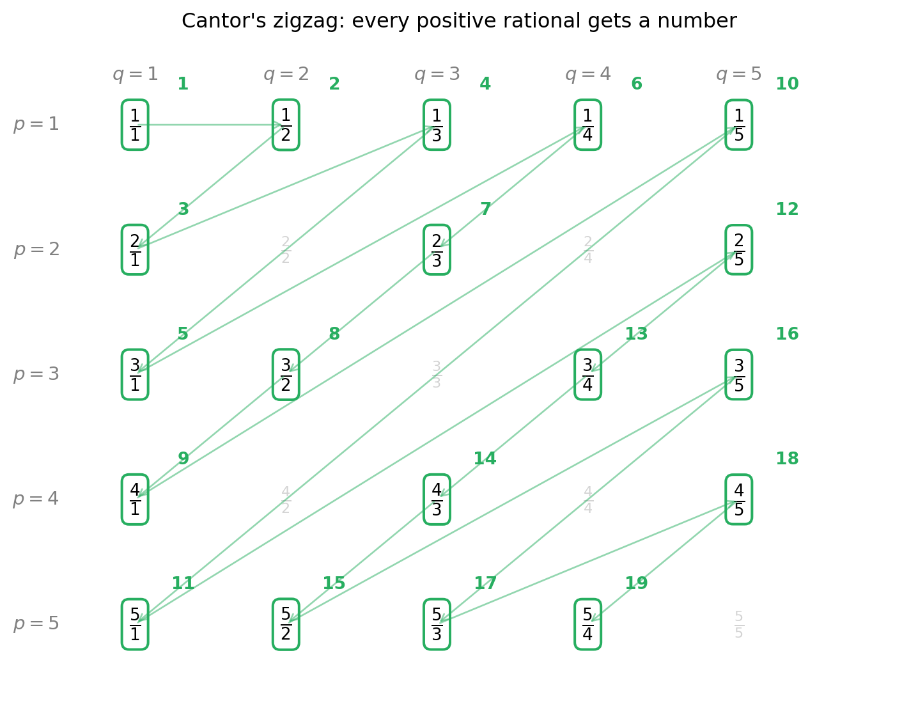
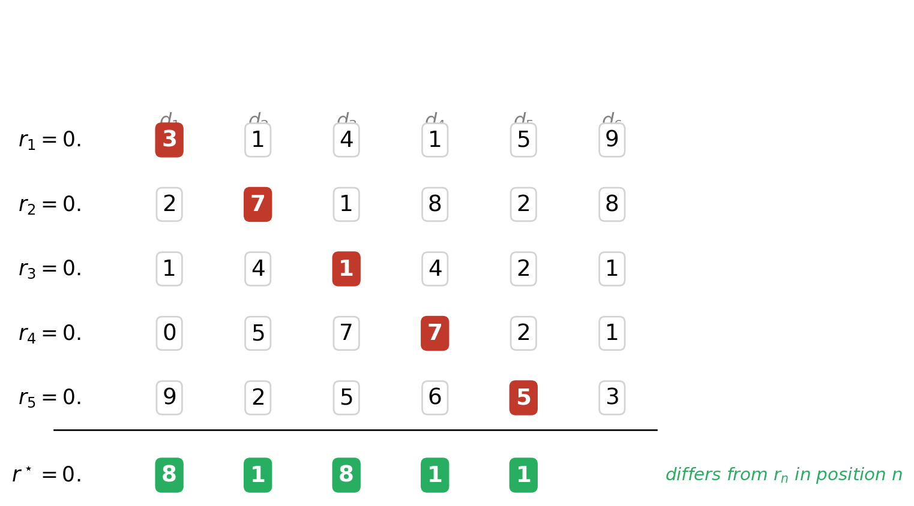

This appendix covers two deep mathematical results that underpin probability theory on continuous spaces. The main text doesn’t require them — every model you’ll use in this book is safe without them. Come here if you want to understand why the rules are the way they are.
14.1 Countable and uncountable sets
The difference between countable and uncountable sets is what separates discrete probability (dice, coins) from continuous probability (the real line).
A set is countable if you can put its elements in 1-to-1 correspondence with the natural numbers \{1, 2, 3, \ldots\} — in other words, if you can list them. The integers \mathbb{Z} are countable. The rationals \mathbb{Q} are countable too, despite appearing “denser” than the integers. The real numbers \mathbb{R} are uncountable — no list can contain all of them.
Tip▶ Show the math — Different sizes of infinity (Hilbert’s Hotel)
If “countable vs uncountable” sounds vague, here’s the picture that makes it concrete.
Hilbert’s Hotel has infinitely many rooms — one for each natural number — and they’re all full. A new guest arrives. Can the manager fit them in?
Yes! Move the guest in room 1 to room 2. Move room 2 to room 3. In general, move room n to room n+1. Room 1 is now free. The new guest checks in.
What if infinitely many new guests arrive? Still fine. Move every current guest from room n to room 2n. All odd-numbered rooms are now empty. Room any number of new guests in them.
This is what mathematicians mean by countably infinite: a set is countable if you can put its elements in 1-to-1 correspondence with the natural numbers \{1, 2, 3, \ldots\}. The integers \mathbb{Z} are countable. Even the algebraic numbers are countable. The rationals are countable too — and the way Cantor showed this is the warm-up for the diagonal argument we’ll see in a moment.
Warm-up: \mathbb{Q} fits in Hilbert’s Hotel (Cantor’s zigzag). Lay out every positive rational p/q in a 2D grid: row p, column q. The grid contains every positive rational somewhere — even duplicates like 2/4 = 1/2 — but it’s a 2D infinity, so naively it looks “bigger” than \mathbb{N}.
Cantor’s trick: walk through the grid along anti-diagonals (the lines where p + q is constant). Skip any fraction you’ve already seen in lowest terms. Number each new fraction as you go: 1, 2, 3, …. Every rational eventually gets a number, so the rationals can be put in 1-to-1 correspondence with \mathbb{N}. They fit.
import matplotlib.pyplot as pltfrom math import gcd# Build the grid of positive rationals up to numerator/denominator <= 5.# Walk anti-diagonals (where p + q is constant), increasing.# Skip duplicates: visit p/q only when gcd(p, q) == 1.max_pq =5visit_order = {} # (p, q) -> position number on the listseen_values =set() # set of (p_reduced, q_reduced) already countedcounter =0for s inrange(2, 2* max_pq +1): # s = p + qfor p inrange(1, s): q = s - pif p > max_pq or q > max_pq:continue g = gcd(p, q) reduced = (p // g, q // g)if reduced in seen_values: visit_order[(p, q)] =None# duplicate — skipelse: counter +=1 visit_order[(p, q)] = counter seen_values.add(reduced)fig, ax = plt.subplots(figsize=(7.5, 6))ax.set_xlim(0.3, max_pq +1.0)ax.set_ylim(0.3, max_pq +0.7)ax.invert_yaxis()ax.axis("off")# Column headers (q values)for q inrange(1, max_pq +1): ax.text(q, 0.6, f"$q = {q}$", ha="center", va="center", fontsize=11, color="grey")# Row headers (p values)for p inrange(1, max_pq +1): ax.text(0.5, p, f"$p = {p}$", ha="right", va="center", fontsize=11, color="grey")# Draw the grid cells with the fraction p/qfor (p, q), pos in visit_order.items(): is_visited = pos isnotNone label =f"$\\frac{{{p}}}{{{q}}}$"if is_visited: ax.text(q, p, label, ha="center", va="center", fontsize=14, color="black", fontweight="bold", bbox=dict(boxstyle="round,pad=0.3", facecolor="white", edgecolor="#27ae60", lw=1.5))# Visit-order number in the corner ax.text(q +0.32, p -0.32, str(pos), ha="center", va="center", fontsize=10, color="#27ae60", fontweight="bold")else: ax.text(q, p, label, ha="center", va="center", fontsize=12, color="lightgrey")# Draw arrows along the visit path connecting consecutive numberspath =sorted( [(pos, p, q) for (p, q), pos in visit_order.items() if pos isnotNone], key=lambda t: t[0],)for k inrange(len(path) -1): _, p1, q1 = path[k] _, p2, q2 = path[k +1] ax.annotate("", xy=(q2, p2), xytext=(q1, p1), arrowprops=dict(arrowstyle="->", color="#27ae60", lw=1.0, alpha=0.5))ax.set_title("Cantor's zigzag: every positive rational gets a number", fontsize=12)plt.tight_layout()plt.show()

Cantor’s zigzag enumeration of the positive rationals. Walking along anti-diagonals of the (p, q) grid, we visit every fraction p/q. Numbers in green show the visit order, skipping fractions already seen in lowest terms (greyed out). Every rational eventually gets a position — so Q is countable.
So the rationals — even though they form a 2D infinity — fit in Hilbert’s Hotel. The same geometric idea (walk a 2D table along its diagonals) gives us a 1D listing.
The punchline: the reals don’t fit. Hilbert’s Hotel cannot accommodate the real numbers\mathbb{R}. Cantor proved this in 1891 with his famous diagonal argument: assume you have a list of all reals between 0 and 1; construct a new real that differs from the n-th entry in its n-th decimal digit; this new real is on the list (we said the list was complete) but cannot be on the list (it differs from every entry). Contradiction. So no list exists.
The same diagonal geometry that succeeded for \mathbb{Q} now fails for \mathbb{R}. For \mathbb{Q}, walking the diagonals enumerated every fraction. For \mathbb{R}, walking the diagonal of any attempted list lets us escape it — build a real that’s missing.
The picture below shows it in action. The boxed digits along the diagonal — d_{11}, d_{22}, d_{33}, \ldots — are read off the supposed list. The new number r^\star at the bottom is built by flipping each diagonal digit (we use the rule “if it’s \le 4, change to 8; otherwise change to 1”). Whatever row you point to, r^\star differs from it in at least one position — so r^\star cannot be on the list. But the list was supposed to contain every real in [0, 1]. Contradiction.
import matplotlib.pyplot as pltimport numpy as np# A made-up "list of all reals in [0, 1]" — five rows, six digits each# (in reality the list would be infinite and the digits would go on# forever; we truncate for the picture).rows = [ [3, 1, 4, 1, 5, 9], [2, 7, 1, 8, 2, 8], [1, 4, 1, 4, 2, 1], [0, 5, 7, 7, 2, 1], [9, 2, 5, 6, 5, 3],]n_rows =len(rows)n_cols =len(rows[0])# Build the diagonal-flipped number r*: differ from row n in position n.flip =lambda d: 8if d <=4else1r_star = [flip(rows[i][i]) for i inrange(n_rows)]fig, ax = plt.subplots(figsize=(8, 4.5))ax.set_xlim(-0.5, n_cols +1.0)ax.set_ylim(-2.0, n_rows +0.5)ax.invert_yaxis()ax.axis("off")# Header row: column indices d_1, d_2, ...for j inrange(n_cols): ax.text(j +1, -0.3, f"$d_{j+1}$", ha="center", va="center", fontsize=12, color="grey")# The list of realsfor i, row inenumerate(rows): ax.text(0, i, f"$r_{i+1} = 0.$", ha="right", va="center", fontsize=13)for j, digit inenumerate(row): is_diag = (i == j) ax.text(j +1, i, str(digit), ha="center", va="center", fontsize=14, color="white"if is_diag else"black", fontweight="bold"if is_diag else"normal", bbox=dict( boxstyle="round,pad=0.25", facecolor="#c0392b"if is_diag else"white", edgecolor="#c0392b"if is_diag else"lightgrey", ))# Separatorax.plot([-0.3, n_cols +0.5], [n_rows -0.5, n_rows -0.5], color="black", lw=1)# r*: built by flipping the diagonalax.text(0, n_rows +0.2, r"$r^\star = 0.$", ha="right", va="center", fontsize=13, fontweight="bold")for j, digit inenumerate(r_star): ax.text(j +1, n_rows +0.2, str(digit), ha="center", va="center", fontsize=14, fontweight="bold", color="white", bbox=dict(boxstyle="round,pad=0.25", facecolor="#27ae60", edgecolor="#27ae60"))ax.text(n_cols +0.6, n_rows +0.2,r"differs from $r_n$ in position $n$", ha="left", va="center", fontsize=11, color="#27ae60", style="italic")plt.tight_layout()plt.show()

Cantor’s diagonal argument: r* differs from every row in the diagonal position, so r* cannot be on the list — yet the list was supposed to contain every real in [0, 1].
“But you only showed five numbers — how is this a proof?” This is the right question to ask. The list is supposed to be infinite, and we obviously can’t write down infinitely many entries. So how does the argument generalise?
The trick is that the proof is not about a particular list — it’s about any list. We never construct the list ourselves. The opponent does (or claims they could). All we provide is a recipe that, applied to any list, produces a number missing from it. The recipe is one short sentence:
“For each n, the n-th digit of r^\star is different from the n-th digit of r_n.”
Notice what this recipe needs to know: just the n-th digit of the n-th row, for every n. Whatever list you hand me — five rows or five trillion — the same recipe applies.
Now suppose someone says: “You stopped at row 5. Maybe r^\star is at row 1,000,000 of the real list.” My reply: if r^\star = r_{1{,}000{,}000}, they must agree in every decimal position — including the 1,000,000-th. But by the recipe, the 1,000,000-th digit of r^\star is defined to differ from the 1,000,000-th digit of r_{1{,}000{,}000}. So they can’t be equal. The same argument works for any row number, no matter how large — because the disagreement at row n is built into the construction for every n, not checked one by one. That’s the crucial move: a single finite recipe handles infinitely many cases simultaneously.
So the worked example with five rows is just a visual aid — you can see the geometry of the diagonal in a small case. The real proof works on the infinite case because the recipe doesn’t depend on the list’s length. It works for any list, including the imagined infinite one.
Note▶ Why doesn’t this argument also “disprove” \mathbb{Q}?
You might wonder: couldn’t we apply the same diagonal trick to a list of rationals q_1, q_2, q_3, \ldots and conclude that \mathbb{Q} is also uncountable? But we just showed \mathbb{Q}is countable (zigzag), so something must rescue us.
Here’s the rescue. The diagonal recipe builds r^\star digit by digit. The result is a real number — but with no guarantee that its decimal expansion is eventually periodic. Infinite non-repeating decimals are irrational. So the constructed r^\star is generally not a rational at all.
That means: when the opponent’s list is supposed to contain every rational, our r^\star being missing from it is not a contradiction — r^\star was never required to be on a list of rationals in the first place.
When the opponent’s list is supposed to contain every real, our r^\star being missing is a contradiction — because r^\star is a real, by construction (any decimal expansion defines a real).
That asymmetry — “diagonalising a list of rationals escapes \mathbb{Q}, but diagonalising a list of reals stays inside \mathbb{R}” — is the entire reason the argument works for one and not the other.
This means there are at least two genuinely different sizes of infinity: the countable (the rooms in Hilbert’s Hotel) and the uncountable (the real line). It also means probability theory on \mathbb{R} is fundamentally different from probability on a finite set — which is why we’ll need calculus, integration, and measure theory once we get to continuous distributions.
14.2 Why “event = subset” eventually breaks: \sigma-algebras
For finite or countable \Omega (dice, coins), every subset is a valid event. For continuous \Omega like [0, 1] or \mathbb{R}, a deep result shows that some subsets simply cannot be assigned a probability without breaking the axioms.
Note▶ The fine print: why “event = subset” eventually breaks
The setup. A probability law P assigns a number to every event. We’ve been saying “event = subset of \Omega”. For finite or countable \Omega, that’s fine — every subset is allowed.
For uncountable\Omega (like [0, 1] or \mathbb{R}), the question is whether we can still assign a probability to every subset. The surprising answer is no — some subsets break the axioms.
Why it breaks (the Vitali set). Imagine picking a number uniformly at random from [0, 1]. In 1905, Vitali constructed a subset V \subset [0, 1] with two properties:
Infinitely many “shifted copies” of V are pairwise disjoint and together cover [0, 1].
All copies have the same probability — call it p — because the experiment is uniform and they’re just shifts of each other.
Apply additivity (axiom A3, probability of a disjoint union = sum of probabilities):
1 \;=\; P([0, 1]) \;=\; \sum_{i=1}^{\infty} P(V_i) \;=\; \sum_{i=1}^{\infty} p.
The right side is the same number p added infinitely many times:
if p = 0 → the sum is 0, not 1 ✗
if p > 0 → the sum is infinite, not 1 ✗
No value of p works. The set V simply cannot have a probability without breaking additivity.
Tip▶ How the Vitali construction actually works — step by step
The argument above says “infinitely many shifted copies cover [0,1]” without showing why. Here is the actual mechanism.
Step 1 — Equivalence classes on [0, 1]. Define a relation: x \sim y iff x - y \in \mathbb{Q}.
0.3 \sim 0.5 because 0.5 - 0.3 = \tfrac{1}{5} ✓
0.3 \not\sim (\pi - 3) because (\pi - 3) - 0.3 = \pi - 3.3 is irrational ✗
This partitions [0,1] into disjoint equivalence classes — each class collects numbers that all differ from one another by a rational. The class of 0 is \mathbb{Q} \cap [0,1]; the class of \pi - 3 is \{\pi - 3 + q : q \in \mathbb{Q},\; \pi - 3 + q \in [0,1]\}. There are uncountably many classes.
Step 2 — Build V (here the Axiom of Choice enters). Pick exactly one representative from each equivalence class and collect them into V. You cannot write V down explicitly — AC guarantees the selection exists but gives no formula. By construction, any two distinct elements of V differ by an irrational (they came from different classes).
Step 3 — The shifted copies. Let \mathbb{Q}_0 = \mathbb{Q} \cap [-1, 1] — countably many rationals. For each q_i \in \mathbb{Q}_0 define
V_i \;=\; V + q_i \;=\; \{v + q_i : v \in V\}.
Step 4 — The V_i are pairwise disjoint. Suppose x \in V_i \cap V_j, so x = v + q_i = v' + q_j for some v, v' \in V. Then v - v' = q_j - q_i \in \mathbb{Q}. But two distinct elements of V differ by an irrational — contradiction. So v = v' and q_i = q_j, meaning i = j. Hence different shifts never overlap.
Step 5 — The V_i cover [0, 1]. Take any x \in [0,1]. It belongs to exactly one equivalence class, whose representative v \in V satisfies x - v = q for some rational q. Since x, v \in [0,1], we have q \in [-1, 1], so q = q_i for some i, giving x = v + q_i \in V_i.
Step 6 — The contradiction. The V_i are countably many, pairwise disjoint, and their union contains [0,1]. By monotonicity and countable additivity:
1 \;\le\; P\!\left(\bigcup_{i} V_i\right) \;=\; \sum_{i=1}^{\infty} P(V_i) \;=\; \sum_{i=1}^{\infty} p.
Translation-invariance (shifting doesn’t change length) forces every P(V_i) = p. If p = 0 the sum is 0 \not\ge 1; if p > 0 the sum is \infty. Neither works — so V cannot be assigned any probability without breaking the axioms.
Piece
Role
Equivalence classes
Partition [0,1] into “rational-difference families”
The set V
One representative per family — requires Axiom of Choice
Shifts V + q_i
Countably many translated copies, one per rational in [-1,1]
Pairwise disjoint
Two elements of V differ by an irrational; q_j - q_i is rational
Cover [0,1]
Every x equals its V-representative plus a rational shift
Contradiction
Translation-invariance + additivity force p = 0 and p > 0 simultaneously
The fix. We restrict the events to a \sigma-algebra\mathcal{F} — a collection of “well-behaved” subsets that:
contains \Omega,
is closed under complements (if A \in \mathcal{F}, then A^c \in \mathcal{F}),
is closed under countable unions (if A_1, A_2, \ldots \in \mathcal{F}, then \bigcup_i A_i \in \mathcal{F}).
These three properties guarantee that the natural operations — and, or, not, countable disjoint unions — keep producing valid events. The Vitali set is outside any reasonable \sigma-algebra, so we never have to assign it a probability.
For the real line, the standard choice is the Borel \sigma-algebra, generated by all open intervals. Every set you’d construct without exotic machinery (intervals, unions of intervals, complements, limits) is in it.
Why we don’t fuss about it in this book. The Vitali set requires the Axiom of Choice to construct — you can’t write down its elements. In every probability model you’ll meet (Normal, Uniform, Beta, …), every set you’d ever care about is already a valid event. Treat “event = subset of \Omega” as your working definition and trust that the measure-theoretic fine print holds. If you go on to a formal probability course (Billingsley, Durrett), this is where the careful version lives.